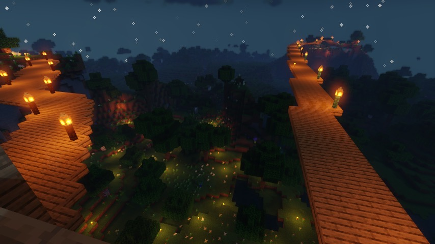

Process
Getting Inspired
Spending hours on Pintrest, Instagram, and TikTok to gain some inspiration on what type of wood would look best and which cut of stone is most convinient.
It's not easy coming up with ideas, if you were to work with Lia for a build in your world, they would listen to what you want it to look like and bring you ideas to ensure your complete satisfaction. Think of Lia as a magical realtor.
Calculating Materials
No one likes that feeling when you're mid project and you run out of supplies.
This is why Lia carefully plans out how many of eat block is needed for the project before embarking on the journey to start it.
Gathering Materials
Now that all the materials have been planned out, its time to gather them!
This process alone can take hours but is worth it once the build starts coming together. As the sun rises and sets, Lia collects every single block by hand.
Build!
Now for the part we've all been waiting for. The building! This part is the most exciting part as you get to watch your dream come to life.
After many locked fingers and cramped wrists, your build is finally complete! Get excited!!
Admire
Sit back, take a sip from a potion and take in what you've imagined.
Don't forget to shake Lia's hand on their way out and enjoy your new home!